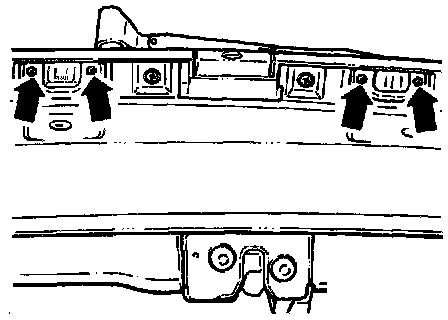

License Plate Lamp: Service and Repair

- Remove plastic molding from underside of rear lid.
- Remove screws (arrows) from license plate light.
- Remove lens.
- Pull bulb straight out of holder.
Bulb: 1.2 V/5 W
NOTE: Do not twist bulb when removing from holder
- Install in reverse order of removal.